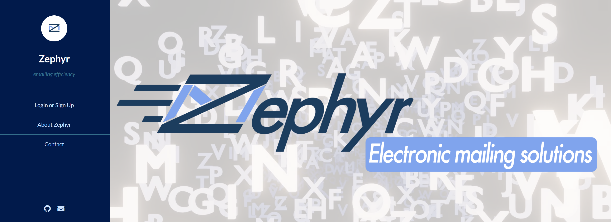
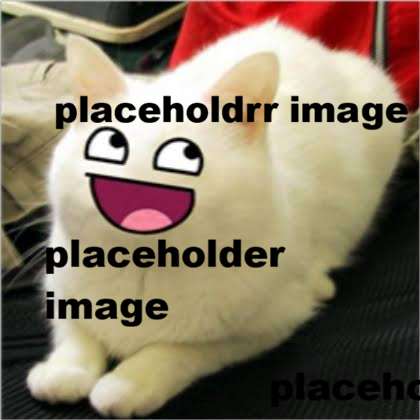

I've completed many projects over my years working with technology and computers.
I believe that the best way to learn is by doing. Hands-on labs and experiments really make information click for me and I wish that more classes or assignments would follow that philosphy.

The Zephyr website was my first introduction into web development. This was an assignment I had in class to create a company and its own website. My group chose the company Zephyr, from the Greek god Zephyrous, the god of the West Wind. Our company was a multi-mail service, supposed to be a completitor
to MailChimp, a popular, real, provider of the same service.
My portion of the assignment was to create the PHP database and to make sure that login and signup functioned. I spent several hours over the course of the few months the assignment was running for learnign the basics of PHP databses and
all of the intricacies of how it would need to function. When I finished, I had a functioning, secure, login and signup interface, secured by the bcrpyt algorithm and stored safely on a DreamHost PHP server.
Note that this project is NOT being maintained and I have unfortunately lost access to it. Most of the PHP sign in / up functionality has broken and I am quite sad about it :(

I started this website on September 22, 2026 with the goal of it being my living, functional, and flashy portfolio and resume. Building this website and getting it posted live has been an immense aid in me learning the skills required in webdev and general computer science outside of a classroom setting. I have learned how to use things like SSL certificates, manage and use cloud webspaces for server storage, the flow and structure of domains, and how domain registry works — just to name a few.
I enjoy building this website. On it, my accolades, a short autobiography, and a sign in page to a collection of my hosted services / applications are listed. My overall plan for this website is to have it be my working portfolio that I can use to show off my skills, knowledge, and past projects.
My biggest (so far) achievement in the world of cybersecuirty, IT, and networking, is my home server. I started it on September 19, 2026. Its current iteration is a lightly modified HP Pavillion Desktop computer, which used to be my main machine from 2018 to roughly 2024. It is running the TrueNAS Scale operating system, a fork of Debian Linux . On it, I have many Docker containers running services such as Immich , a free, open source alternative to Google Photos. My goal with running a homelab is to learn about networking, network security, and many other doctrines centered around the IT and cybersecuirty field. I have learned about network tunnels through running Cloudflare Tunnels in conjunction with Cloudflared, general networking practices such as the allocation of IP addresses and associated ports, worked with Linux shell and CLI tools, Docker, and many other useful and incredibly interesting skills. At this time, I have a cloudflare tunnel working in conjunction with a Cloudflare Zero-Trust policy to access three self hosted services. Firstly, hosted on immich.fnafinatic09.xyz is my Immich web interface. As stated earlier, this is a replacement for Google Photos. Hosted on crafty.fnafinatic09.xyz is a link to my Crafty Controller dashboard, a Minecraft Server console, so I can run and easily manage a Minecraft server. Finally, on gotify.fnafinatic09.xyz is my Gotify stream, which is a service that can send push notifications to my phone and desktop, used for issues such as hardware failure, high disk pool usage, and container crashes.
This is a major passion project of mine that I will continue using, upgrading, and learning on for as many years as the computer and current computer hardware prices will allow. The project has taught me so much about intricate cybersecurity / networking details that I never would have learned without it.